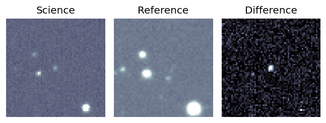

Candidate List 20250910Previous Day Next Day
Section 1: New Sources (age<1d) Section 2: Old (1-5d) sources observed last nightplaceholder
Section 1: New Afterglow/FBOT Cands Last Night (0)
Section 2: Older Sources Observed Last Night (1)
0. ZTF25aboyjss (Afterglow?) [Back to Top] [Share] [Trigger Swift] [Fritz] [Lasair]RA, Dec: 86.956, 9.51472 5h47m49.44s, 9d30m53.00sGalactic (l, b): 197.02304, -9.50554 ext(g-r) = 0.406

PS1: 0 sources in 3 arcsec
LegacySurvey: 0 sources in 3 arcsec

Extinction-corrected gr color:
From alerts: 0.1 +/- 0.26 mag
Consistent with synchrotron, g-r>0!
Rise Rate:
g: 0.03 mag/day
r: 0.04 mag/day
i: -99 mag/day
Fade Rate:
g: 0.2 mag/day
r: 0.08 mag/day
i: -99 mag/day